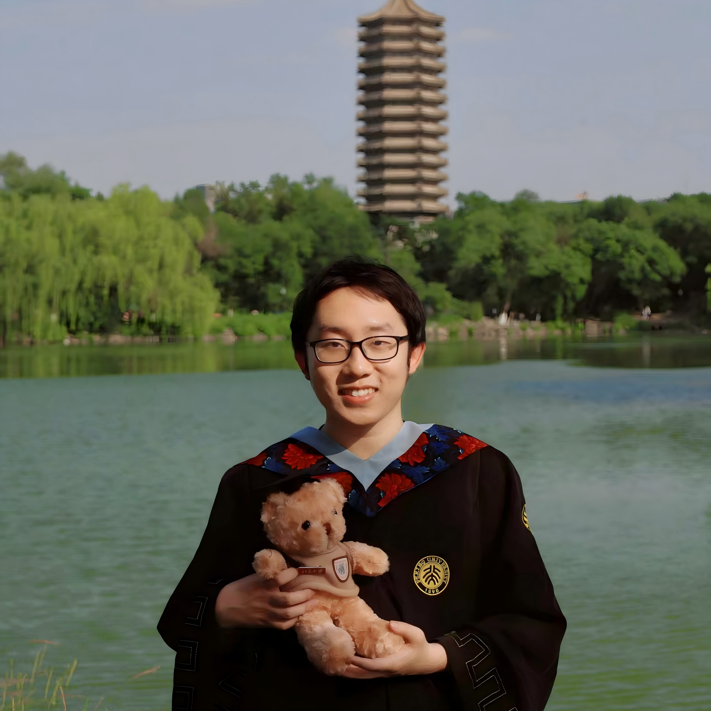

Minghao Yuan
Ph.D. student · DACN Lab
Peking University, Beijing
Peking University, Beijing
My name is Yuan Minghao (袁明昊).
I am a undergraduate student of Yuanpei College, Peking University.
I am interested in computational psychiatry, emotion, and mental health.
Now I am a research assistant in Depression and Anxiety Computational Neuroscience Lab (DACN Lab) mentored by Dr. Yujia Peng.

Education
- Ph.D. in Applied Psychology — School of Psychology and Cognitive Sciences, Peking University (2026 - 2031)
- B.Sc. in Psychology — Yuanpei College, Peking University (2022 - 2026)
Publications
-
Tracking Life's Ups and Downs: Mining Life Events from Social Media Posts for Mental Health Analysis
Minghao Lv, Siyuan Chen, Haoan Jin, Minghao Yuan, Qianqian Ju, Yujia Peng, Kenny Q. Zhu, and Mengyue Wu · ACL 2025 · [DOI]
† Equal contribution · * corresponding author. Full list on Google Scholar.
Services
- Conference Reviewer: WWW (2024)
- Journal Reviewer: BMC psychology
Teaching Experience
- Advanced Research Methods in Psychology (master's) — Peking University (Spring 2026)
Teaching assistant - Experimental Psychology (undergraduate) — Peking University (Fall 2025)
Teaching assistant
Awards & Honors
- 2025 — The Second Prize of Peking University Scholarship, PKU
- 2024 — CMC Scholarship, PKU
- 2023 — The First Prize of Peking University Scholarship, PKU
- 2022 — The 93rd-94th Soh Bing Scholarship, Soh Bing Scholarship Foundationt
Blog · Notes
Meta-Analysis Tutorial in R
A Chinese Meta-analysis tutorial in R language, based on Doing Meta-Analysis with R: A Hands-On Guide.
Read more →
RStan: the R interface to Stan
Chinese translation of RStan: the R interface to Stan, a vignette providing an introduction to fitting a model in RStan.
Read more →